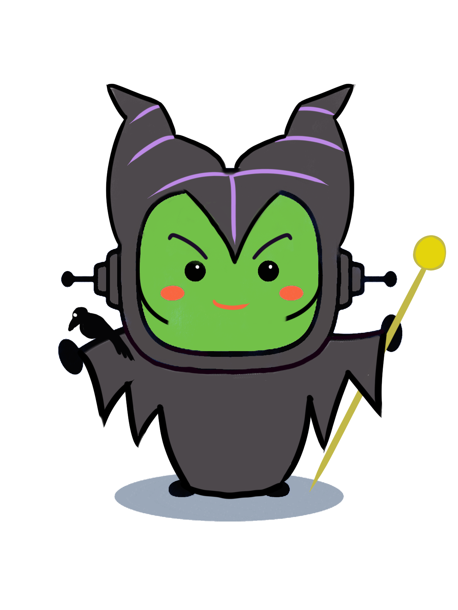

Persona que hace un papel, “hace de otra persona” en el teatro, televisión o radio.
Ejemplo:
De mayor me gustaría ser actor.
Designar
Definición:
Señalar o nombrar a algo.
Ejemplo:
Me designaron delegado de clase.
Noticia
Definición:
Comunicado de un hecho a través de los medios de comunicación: televisión, radio, internet...
Ejemplo:
Me gusta ver las noticias mientras ceno.
Novela
Definición:
Narración más larga y compleja que los cuentos o relatos.
Ejemplo:
No puedo parar de leer esta novela, es muy interesante.
Periodista
Definición:
Persona que trabaja buscando y comunicando noticias sobre diferentes temas.
Ejemplo:
El periodista contará toda la información sobre el partido de fútbol.
Ya sé que los verbos son difíciles, pero para poder contar hay que recordarlos y entender cuándo se usa cada uno.
¡Ojo! Es muy importante, decidas lo que decidas, que utilices bien los verbos para que quede claro en qué tiempo se desarrolla tu relato.
¡Mucho ánimo! Cada vez estás más cerca de poder usar tu superpoder.
Lectura facilitada
Los verbos son muy difíciles de usar.
Son necesarios para contar historias.
Ahora vamos a recordar qué son los verbos.
Vamos a recordar cuándo usamos los tiempos verbales.
Los verbos nos ayudan a saber cuándo pasan los acontecimientos.
Los acontecimientos pueden pasar en el pasado, y también en el presente.
1. El tiempo narrativo
¿Te acuerdas de que comprobamos que en los relatos, al narrar, siempre se hace en un tiempo concreto? Vamos a conocer cuáles son las opciones para utilizar los tiempos en la narración.
En los textos narrativos, los tiempos verbales son fundamentales para marcar el ritmo y se encargan de designar el marco temporal. Se pueden utilizar tanto tiempos de presente como de pasado:
Presente
Presente actual (digo): Se utiliza cuando la figura narradora es un periodista o se narra una historia o suceso que está ocurriendo en el momento actual.
Presente histórico (digo): Se emplea en los relatos y novelas cuando el narrador cuenta la historia ocurrida en el pasado como si estuviera sucediendo ahora.
Presente de diálogo (dice): Se usa cuando los personajes hablan entre sí.
Pasado
Pretérito imperfecto (decía): Se emplea cuando se designa una acción que está ocurriendo y que aún no ha terminado.
Pretérito perfecto simple: la acción está terminada (dijo)

¡Con un visado y las espinas de un pescado rosado,
con este hechizo te mando al pasado!
Definición:
Narración más larga y compleja que los cuentos o relatos.
Ejemplo:
No puedo parar de leer esta novela, es muy interesante.
Definición:
Persona que trabaja buscando y comunicando noticias sobre diferentes temas.
Ejemplo:
El periodista contará toda la información sobre el partido de fútbol.
Definición:
Persona que hace un papel, “hace de otra persona” en el teatro, televisión o radio.
Ejemplo:
De mayor me gustaría ser actor.
Definición:
Narración más larga y compleja que los cuentos o relatos.
Ejemplo:
No puedo parar de leer esta novela, está muy interesante.
Definición:
Señalar o nombrar a algo.
Ejemplo:
Me designaron delegado de clase.
Easier to read
¿Recuerdas que los relatos pasan en un momento concreto?
En la narración, los verbos nos cuentan cuándo pasan las cosas.
Se pueden usar acciones del presente (están pasando) o del pasado (ya han terminado).
Presente
Presente actual :
Se usa cuando el narrador o narradora cuenta una historia que ocurre en ese momento.
Presente histórico:
Se usa cuando el narrador o narradora cuenta una historia ya terminada, como si la historia estuviera ocurriendo ahora.
Presente de dialogo:
Se usa cuando los personajes hablan entre sí.
Pasado
Pretérito imperfecto:
Se usa para contar una acción (comer, jugar...) que empezó y que aún no ha terminado.
Pretérito perfecto simple:
Se usa cuando la acción (pescar, comprar...) está ya terminada.
Orlando Bloom regresa a la Tierra Media. Peter Jackson confirma que el actor formará parte del reparto de El hobbit. Orlando Bloom vuelve a la Tierra Media. El director de El Hobbit, Peter Jackson, ha confirmado la participación del actor en la precuela de El Señor de los Anillos, donde retomará su papel como el príncipe elfo Legolas. "Hace diez años Orlando Bloom creó un personaje icónico con su interpretación de Legolas. Estoy emocionado de poder anunciar que nuestro regreso a la Tierra Media volverá a contar con su presencia", anunció Jackson en un escueto comunicado oficial en el que también tuvo tiempo para el humor. "Estoy encantado de volver a trabajar con Orlando. Lo más gracioso es que yo parezco más viejo que entonces, ¡pero él no! Será un elfo maravilloso", bromea el cineasta desde Nueva Zelanda donde hace ya varias semanas arrancó el rodaje de El Hobbit.
Presente histórico (digo):
En el siglo XX la humanidad experimenta un avance tecnológico sin precedentes, que da comienzo con la Revolución Industrial, en 1760.
Presente de dialogo (dice):
Matilda dice: “Hoy tenemos que hablar seriamente”.
— Apúrense o llegaremos tarde— grita la madre.
Pasado
Pretérito imperfecto (decía):
"Nuestra historia comienza cuando el señor y la señora Dursley se despertaron un martes, con un cielo cubierto de nubes grises que amenazaban tormenta. Pero nada había en aquel nublado cielo que sugiriera los acontecimientos extraños y misteriosos que poco después tendrían lugar en toda la región. El señor Dursley canturreaba mientras se ponía su corbata más sosa para ir al trabajo, y la señora Dursley parloteaba alegremente mientras instalaba al ruidoso Dudley en la silla alta". J. K. Rowling, Harry Potter y la piedra filosofal
Pretérito perfecto simple:
"Todo era de metal. Una agitada sacudida movió el suelo bajo sus pies. Se cayó ante aquel movimiento repentino y retrocedió a cuatro patas, con unas gotas de sudor cubriéndole la frente a pesar del aire frío. Su espalda chocó contra una dura pared de metal y se deslizó por ella hasta que dio con la esquina de la habitación. Se arrellanó en el suelo, con las piernas bien pegadas al cuerpo y la esperanza de que pronto se le adaptaran los ojos a la oscuridad". James Dashner, El corredor del laberinto
Definición:
Persona que hace un papel, “hace de otra persona” en el teatro, televisión o radio.
Ejemplo:
De mayor me gustaría ser actor.
Lumen dice... Para tenerlo claro
Ya sabes que siempre me gusta ponerte a prueba para que te demuestres qué sabes y qué deberías reforzar, ahora sobre el tiempo en la narración. ¡Seguimos avanzando!
Easier to read
Me gusta ponerte retos.
También me gusta ver qué sabes y qué necesitas trabajar más.
Abajo hay cuatro actividades.
Elige la que sepas hacer mejor.
¡Seguimos avanzando!
2. ¡Ahora te toca a ti!
Aquí te dejo una serie de ejercicios para que desarrolles el que creas que mejor se adapta a ti y con el que puedas demostrar lo que sabes sobre el tiempo en la narración.
Opción A: Tiempo al tiempo
Completa el nombre de los tiempos verbales, según corresponda:
Opción B: Transforma la historia en noticia
Has visto los tiempos verbales que emplea el relato "El elefante encadenado", ahora prueba a cambiar todos los tiempos para que en vez de un relato parezca una noticia. Ánimo, atrévete y grábala.
Definición:
Comunicar un hecho a través de los medios de comunicación: televisión, radio, internet...
Ejemplo:
Me gusta ver las noticias mientras ceno.
Opción C: Explora en el texto
Busca en el texto de "El elefante encadenado" dos ejemplos de tiempo presente y dos de tiempo pasado. A continuación, apúntalos en tu cuaderno.
Ahora se trata de conocer los tiempos verbales de la narración. A partir de los tiempos verbales que aparecen arriba, en presente y pasado, indica a qué tiempos verbales corresponden los que has apuntado del relato en tu cuaderno.
¡Por las barbas del viejo Tomás,
que no lo conseguirás!
Opción D: Todo a su debido tiempo
Ya hemos visto que en la narración encontramos tiempos en presente o pasado como son el presente de indicativo, el pretérito imperfecto, el pretérito pluscuamperfecto o el pretérito perfecto simple.
¿Te atreves ahora a explicar para qué sirve cada uno de esos tiempos verbales? Cuando lo tengas claro, elabora un resumen en tu cuaderno. Recuerda poner ejemplos de cómo usamos los verbos que vas explicando en un relato.
Vuelve sobre tu guion y decide qué verbos vas a utilizar.
Es decir, en qué tiempo o tiempos estará tu historia. ¡Vamos! Ahora no te vayas a rendir que estamos muy cerca.
Recuerda hacerlo en la ficha que descargaste para rellenarla en tu dispositivo, sin olvidar guardar los cambios, o imprimirla para rellenarla manualmente.
Easier to read
Ahora coge tu guion y piensa qué verbos usar.
Elige cuándo va a pasar tu historia.
Puede pasar en el presente o en el pasado.
¡Vamos, no te rindas!
3. Tu guion
Ya hemos trabajado el tiempo narrativo y hemos aprendido cuáles son los tiempos verbales que se emplean. Ahora decide en qué tiempo sucede tu historia (pasado, presente o futuro) y si va a haber o no saltos en el tiempo.
Recuerda el relato que elaboraste con los dados cuenta-historias y utilízalo como punto de partida. Cuando lo tengas decidido, completa la ficha del guion con la información.
Recuerda hacerlo en la ficha que descargaste para rellenarla en tu dispositivo, sin olvidar guardar los cambios, o imprimirla para rellenarla manualmente.
Motus dice ... ¿Te han resultado difíciles los verbos?
Aunque usemos los verbos a diario, ¿te ha resultado difícil entender el uso de los tiempos verbales? Si te has equivocado, es normal. ¿Has podido corregirlo?
Cuando queremos aprender algo, lo normal es equivocarse al principio. Fallar forma parte de aprender. ¿Recuerdas cuando montaste en bici por primera vez?, ¿o cuando intentabas nadar en el agua? Seguro que al principio no fue fácil, pero cada vez que fallabas, lo intentabas de nuevo. Con cada fallo aprendemos del error y lo mejoramos para la vez siguiente.
Para aprender de tus errores sigue estos consejos:
Me doy cuenta de en qué parte he fallado.
Busco la forma de mejorar ese error.
Lo intento de nuevo.
Entiendo que el error es importante para aprender.
No lo olvides: cuando te equivocas una vez, aprendes para el siguiente intento.
Así que tu superpoder está creciendo y en breve serás cuentista profesional.

 Ya sé que los verbos son difíciles, pero para poder contar hay que recordarlos y entender cuándo se usa cada uno.
Ya sé que los verbos son difíciles, pero para poder contar hay que recordarlos y entender cuándo se usa cada uno.
 Ya sabes que siempre me gusta ponerte a prueba para que te demuestres qué sabes y qué deberías reforzar, ahora sobre el tiempo en la narración. ¡Seguimos avanzando!
Ya sabes que siempre me gusta ponerte a prueba para que te demuestres qué sabes y qué deberías reforzar, ahora sobre el tiempo en la narración. ¡Seguimos avanzando!